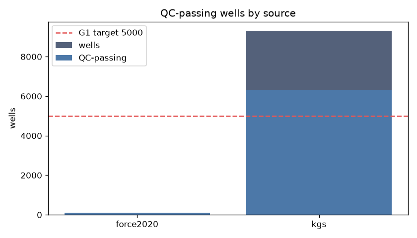

Total QC-passing: 6434 across 2 continents. G1 target: 5000 across 2+ continents. Status: MET.
| Source | Continent | Wells | QC-passing |
|---|---|---|---|
| FORCE 2020 (Norway, North Sea) | Europe | 98 | 98 |
| KGS (Kansas, USA) | North America | 9307 | 6336 |
| TOTAL | 2 continents | 9405 | 6434 |
